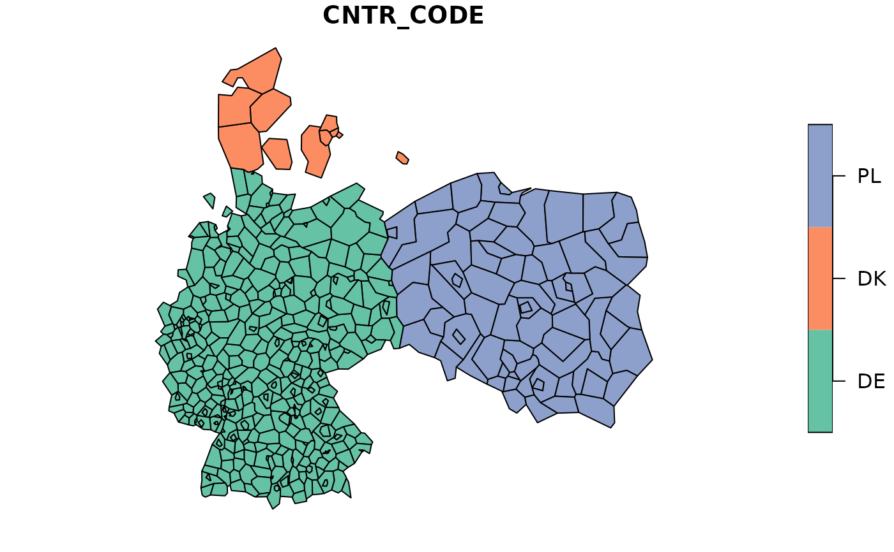

Geospatial data of Europe from GISCO in 1:60 million scale from year 2016
Source:R/data_spatial.R
eurostat_geodata_60_2016.RdGeospatial data of Europe from GISCO in 1:60 million scale from year 2016
Source
Data source: Eurostat via giscoR::gisco_get_nuts().
© EuroGeographics for the administrative boundaries
Data downloaded from: https://ec.europa.eu/eurostat/web/gisco/geodata/reference-data/administrative-units-statistical-units
Details
The dataset contains 2016 observations (rows) and 12 variables (columns).
The object contains the following columns:
id: JSON id code, the same as NUTS_ID. See NUTS_ID below for further clarification.
LEVL_CODE: NUTS level code: 0 (national level), 1 (major socio-economic regions), 2 (basic regions for the application of regional policies) or 3 (small regions).
NUTS_ID: NUTS ID code, consisting of country code and numbers (1 for NUTS 1, 2 for NUTS 2 and 3 for NUTS 3)
CNTR_CODE: Country code: two-letter ISO code (ISO 3166 alpha-2), except in the case of Greece (EL).
NAME_LATN: NUTS name in local language, transliterated to Latin script
NUTS_NAME: NUTS name in local language, in local script.
MOUNT_TYPE: Mountain typology for NUTS 3 regions.
1: "where more than 50 % of the surface is covered by topographic mountain areas"
2: "in which more than 50 % of the regional population lives in topographic mountain areas"
3: "where more than 50 % of the surface is covered by topographic mountain areas and where more than 50 % of the regional population lives in these mountain areas"
4: non-mountain region / other region
0: no classification provided (e.g. in the case of NUTS 1 and NUTS 2 and non-EU countries)
URBN_TYPE: Urban-rural typology for NUTS 3 regions.
1: predominantly urban region
2: intermediate region
3: predominantly rural region
0: no classification provided (e.g. in the case of NUTS 1 and NUTS 2 regions)
COAST_TYPE: Coastal typology for NUTS 3 regions.
1: coastal (on coast)
2: coastal (>= 50% of population living within 50km of the coastline)
3: non-coastal region
0: no classification provided (e.g. in the case of NUTS 1 and NUTS 2 regions)
FID: Same as NUTS_ID.
geo: Same as NUTS_ID, added for for easier joins with dplyr. However, it is recommended to use other identical fields for this purpose.
geometry: geospatial information.
Dataset updated: 2023-06-29. For a more recent version, please use
giscoR::gisco_get_nuts() function.
References
The following copyright notice is provided for end user convenience. Please check up-to-date copyright information from the eurostat website: GISCO: Geographical information and maps - Administrative units/statistical units
"In addition to the general copyright and licence policy applicable to the whole Eurostat website, the following specific provisions apply to the datasets you are downloading. The download and usage of these data is subject to the acceptance of the following clauses:
The Commission agrees to grant the non-exclusive and not transferable right to use and process the Eurostat/GISCO geographical data downloaded from this page (the "data").
The permission to use the data is granted on condition that:
the data will not be used for commercial purposes;
the source will be acknowledged. A copyright notice, as specified below, will have to be visible on any printed or electronic publication using the data downloaded from this page.
Copyright notice
When data downloaded from this page is used in any printed or electronic publication, in addition to any other provisions applicable to the whole Eurostat website, data source will have to be acknowledged in the legend of the map and in the introductory page of the publication with the following copyright notice:
EN: © EuroGeographics for the administrative boundaries
FR: © EuroGeographics pour les limites administratives
DE: © EuroGeographics bezüglich der Verwaltungsgrenzen
For publications in languages other than English, French or German, the translation of the copyright notice in the language of the publication shall be used.
If you intend to use the data commercially, please contact EuroGeographics for information regarding their licence agreements."
See also
giscoR::gisco_get_nuts() and
Eurostat. (2019). Methodological manual on territorial typologies – 2018 edition. Manuals and guidelines.
Other datasets:
eu_countries,
tgs00026
Other geospatial:
get_eurostat_geospatial()
Examples
eurostat_geodata_60_2016 <- eurostat::eurostat_geodata_60_2016
# Manipulate and plot
if (require(sf)) {
library(sf)
# Filter NUTS3 from select countries like in a regular data frame
example_nuts <- subset(eurostat_geodata_60_2016, LEVL_CODE == 3 &
CNTR_CODE %in% c("DK", "DE", "PL"))
plot(example_nuts["CNTR_CODE"])
}
#> Loading required package: sf
#> Linking to GEOS 3.12.1, GDAL 3.8.4, PROJ 9.4.0; sf_use_s2() is TRUE
